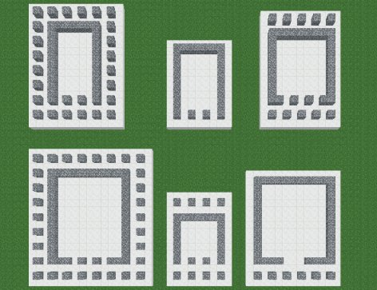
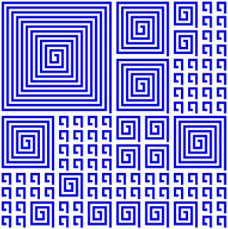
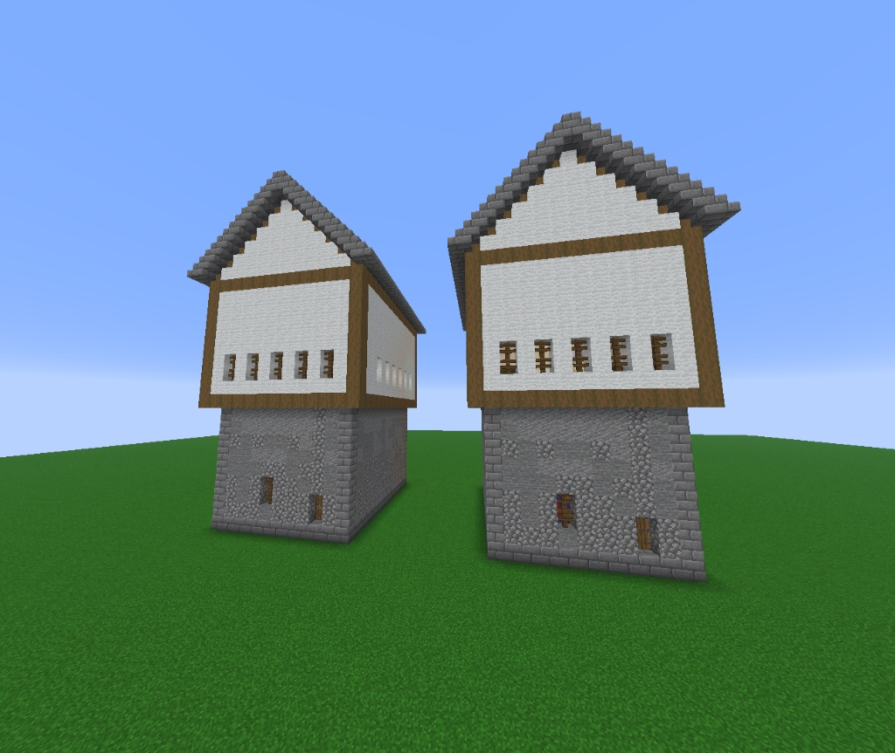

Research Paper
Presented by Markus Eger at Foundations of Digital Games (FDG '22)
The Python Foundation
Splitting a box using with split() creates smaller boxes. Filling a box ends the cycle with a Minecraft block.
@rule(constraint=Dimension.X % 2 == 1)
def castle_wall():
with split(Dimension.X, [5, -1, 5]):
fill(COBBLESTONE)
gate()
fill(COBBLESTONE)
Multiple @rule functions can share the same name. Python picks a rule whose constraint holds.
Positive numbers are fixed blocks. Negative numbers fill the remaining space.
Loops can create repeating walls.
Open the gate to the castle by setting the Width (X) greater than 9
Toggle battlements by activating the loop
Regenerate the random variants of stone blocks
Cut along different axes
Beyond One Wall
Box-split grammars allow us to generate floor plans, recursive tiles, and multi-story, multi-room buildings.



Reflection